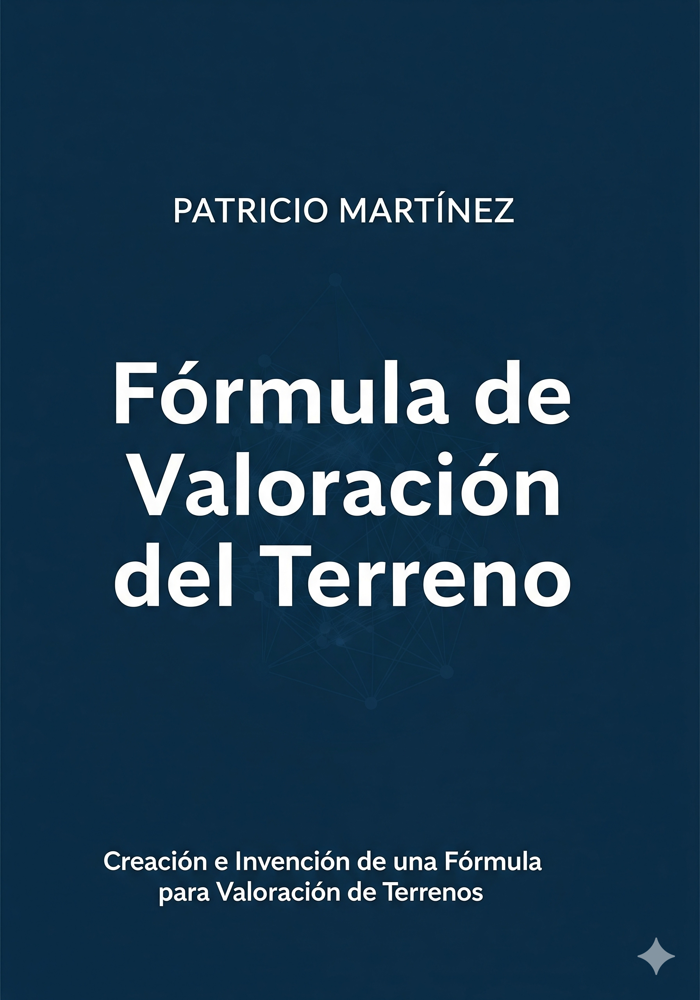

Es un honor y una gran satisfacción compartir los resultados de una evaluación sin precedentes para mi libro, **"Fórmula de Valoración del Terreno: Creación e Invención de una Fórmula para Valoración de Terrenos"**. En esta ocasión, seis de las aplicaciones de Inteligencia Artificial más utilizadas y reconocidas a nivel mundial —ChatGPT, Gemini, Microsoft Copilot, Mistral AI, Perplexity AI y Voilà— han analizado mi obra en profundidad.
Que estas herramientas de vanguardia valoren mi trabajo es un testimonio inmenso del rigor, la innovación y la utilidad que mi investigación aporta al sector. Este reconocimiento valida años de esfuerzo y dedicación, confirmando que el camino de la investigación y la escritura ha tenido una gran recompensa.
Aspectos Más Destacados por la Inteligencia Artificial:
- Enfoque y utilidad.
- Metodología robusta.
- Valor para el público objetivo.
- Aporte al sector.
- Potencial técnico.
- Enfoque especializado.
- Alto valor técnico y práctico.
- Originalidad en la cobertura de tipos de terrenos.
- Buen equilibrio entre teoría y casos reales.
- Contexto económico.
- Sensibilización sobre riesgos.
- Innovación.
- Rigor.
- Aplicabilidad.
- Extensión.
- Organización.
- Contribución.
- Amplia cobertura de temas relacionados.
- Apoyo visual con numerosas ilustraciones.
- Presentación y claridad.
- Bibliografía y soporte teórico.
- Calidad académica.
Calificaciones Promedio Otorgadas por la IA:
- ChatGPT: **4.6 de 5 estrellas.**
- Gemini: **5 de 5 estrellas.**
- Microsoft Copilot: **4.2 de 5 estrellas.**
- Mistral AI: **4.65 de 5 estrellas.**
- Perplexity AI: **4 de 5 estrellas.**
- Voilà: **4.5 de 5 estrellas.**
Estos resultados, provenientes de las tecnologías de IA más avanzadas, refuerzan la calidad y el impacto de mi trabajo. Es una validación invaluable que me impulsa a seguir contribuyendo al conocimiento en el campo de la valoración de terrenos y las finanzas.
Si deseas profundizar en estos conceptos y descubrir cómo transformar tu comprensión de la valoración inmobiliaria, te invito a explorar mi libro: